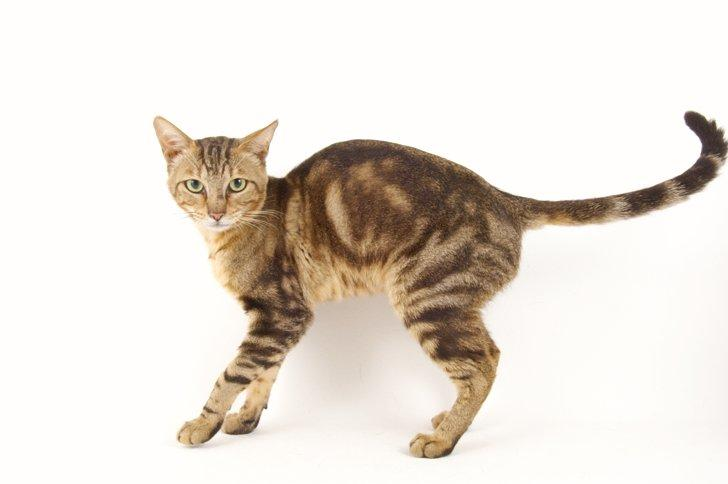

Los gatos sokoke, que originalmente recibían el nombre de gatos khadzonzos, son oriundos del continente africano, en concreto son comunes en toda Kenia, donde viven de forma salvaje tanto en zonas urbanas como en aquellas más agrestes. Algunos ejemplares de estos felinos fueron capturados por una criadora inglesa, llamada J. Slater, quien junto con una criadora amiga suya, Gloria Modrup, decidió criarlos y originar así ejemplares adaptados a la vida doméstica. El programa de cría fue bastante exitoso, pues tras comenzar en 1978 apenas unos años después, allá por 1984, la raza de gatos sokoke fue reconocida oficialmente en Dinamarca, expandiéndose la raza por otros países como Italia, donde llegaron en 1992.
Con un peso que oscila entre los 3 y los 5 kilogramos. Además, la esperanza de vida de los gatos sokoke se sitúa entre los 10 y 16 años. Estos felinos tienen un cuerpo alargado, lo que hace que tengan un elegante porte, pero al mismo tiempo sus extremidades presentan una desarrollada musculatura, siendo muy fuertes y ágiles, siendo las patas traseras algo más largas que las delanteras. La cabeza es de formas redondeadas y pequeño tamaño, siendo la parte superior, la que corresponde a la frente, más plana y sin stop marcado. Los ojos son de color marrón, castaño o almendra, oblicuos y de tamaño medio. Sus orejas son medianas y siempre erguidas de forma que parece que siempre estén alerta, aunque no es imprescindible, se valora positivamente la existencia de penachos en las orejas. Lo más llamativo de los sokoke es su pelaje, el cual es atigrado o tabby, haciendo que junto con el color pardo del mismo, el manto luzca como si fuese la corteza de un árbol. Este manto es corto, de color ámbar con patrón atigrado y de aspecto muy brillante.

Son una de las razas más amigables y peculiares en este sentido. Son gatos afables, activos y enérgicos, que necesitan las atenciones y mimos de sus dueños, pidiendo caricias y buscando el juego constantemente. Aunque por el nivel de actividad que necesitan se recomiende que es mejor tenerlos en lugares amplios como en viviendas que dispongan de terreno o zonas ajardinadas. No obstante, estos felinos se adaptan también a vivir en apartamentos, siempre que dispongan de zonas donde jugar y liberar su energía de forma positiva. También se adaptan muy bien en materia de convivencia, tanto es así que se muestra sumamente respetuoso con otros animales, ya sean gatos u otros animales domésticos, siempre que estén debidamente socializados. De la misma forma se lleva bien con personas de todas las edades y condiciones, siendo muy cariñoso y cuidadoso con todos.

Necesitarán que prestemos atención a sus necesidades afectivas. Por ello son unos gatos que no llevan demasiado bien estar mucho tiempo solos. Si no les prestamos suficiente atención puede que nuestro felino se muestre triste, ansioso o demandante, emitiendo continuos maullidos para así poder captar nuestra atención. Al tener un pelo muy corto no será necesario que estemos cepillándolo diariamente, con una vez cada semana o cada dos bastará, los baños no son necesarios salvo que por algún motivo nuestro gatito se haya ensuciado o embarrado y necesitemos eliminar el exceso de suciedad. En esos casos hemos de tomar una serie de medidas como usar un champú adecuado o vigilar que una vez finalizado el baño nuestro gato esté completamente seco, de lo contrario podría resfriarse. Debido a su energía tendremos que proporcionar a nuestro sokoke las herramientas y los recursos necesarios para ejercitarse y así mantener un nivel de energía adecuado. Para ello podemos comprarle juguetes o rascadores con diferentes niveles para que los escalen, ya que adoran esta actividad, pues en África es común que se pasen el día subiendo y bajando de los árboles. Si no queremos comprarlos, también podemos fabricar nuestros propios juguetes en casa.

No se han hallado enfermedades congénitas o hereditarias propias de la misma. Esto es debido a que se trata de una raza que ha surgido de forma natural, siguiendo el curso de la selección natural, que ha hecho que los ejemplares que han sobrevivido en aquel terreno tan salvaje de África, sean los más fuertes y resistentes. Aún así no debemos descuidar la salud y los cuidados de nuestro felino, debemos por ejemplo cuidar que su alimentación sea adecuada y de calidad, que pueda ejercitarse a diario o que sus ojos, orejas y boca estén limpios y sanos. Visitaremos el veterinario cada 6 o 12 meses. Un aspecto al que debemos prestar especial atención es a las condiciones meteorológicas, pues al tener un pelaje tan corto y no demasiado denso, sin capa lanosa, nuestro sokoke es bastante sensible al frío. Por ello, hemos de tener cuidado de que la temperatura en el hogar sea templada, de que cuando se moje lo sequemos completamente o de que no salga al exterior cuando las temperaturas sean demasiado bajas.